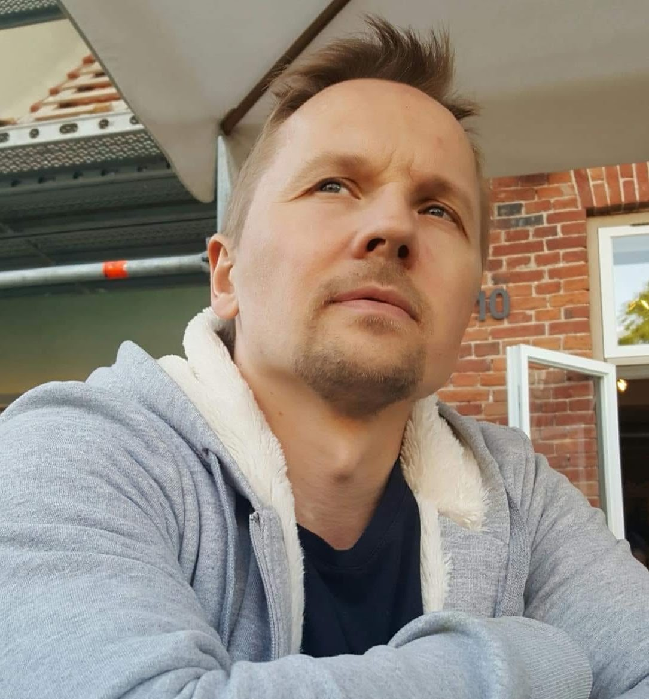

VNValdo Nõlvak
IT kutseõpetaja · IT süsteemide administraator
Olen Haapsalu Kutsehariduskeskuses IT kutseõpetaja. Õpetan IT korralduse aluseid, operatsioonisüsteemide aluseid ning Windows- ja Linux-serverite haldust.
Lisaks töötan osalise ajaga Põhja-Eesti Regionaalhaiglas IT süsteemide administraatorina. See töö täiendab minu igapäevast praktikat kutseõpetajana ja annab kogemusi, mida saan oma õppeainetes rakendada.
„Õpetaja on inimene, kes hoolsa aednikuna paneb iga päev tükikese oma mõistusest ja südamest noortele kaasa.“ — Toomas Hendrik Ilves
CV
Töökogemus
- okt 2020 – praeguIT-spetsialistPõhja-Eesti Regionaalhaigla
- sept 2010 – praeguKutseõpetajaHaapsalu Kutsehariduskeskus
- juuli 2007 – sept 2020IT-spetsialistSA Läänemaa Haigla
- sept 2006 – aug 2010ArvutiõpetajaRidala Põhikool
- juuli 2005 – sept 2007PastorRidala Baptisti Kogudus
- apr 2005 – juuli 2018IT-juhtHaapsalu Nikolai Kool
- jaan 2001 – märts 2003IT-spetsialistLäänemaa Postkontor
- sept 1998 – aug 2008IT-juht ja arvutiõpetajaHaapsalu Gümnaasium
Haridustee
- 2024 – 2025Cloud-native application design and DevOpsTartu Ülikool, mikrokraad (5.02.2024 – 1.02.2025)
- 2006 – 2009RakendusinformaatikaTallinna Ülikooli Haapsalu Kolledž, rakenduskõrgharidus
- 1998 – 2002TeoloogiaEMK Teoloogiline Seminar, rakenduskõrgharidus
- 1993 – 1996InfotöötlejaTallinna Majanduskool, keskeriharidus, lõpetanud kiitusega
- 1993 – 1996KeskharidusHaapsalu 1. Keskkool
Enesetäiendamine
Täiendkoolitused
- 2025Pilveteenuste alused (CompTIA Cloud+), 50 ak tundi
- 2024Hunt The Hacker 2.0 (HtH), 16 tundi
- 2024Hands-on Hacking Essentials (HOHE), 16 tundi
- 2023JNCIS course: Junos Intermediate Routing (JIR)
- 2023JNCIA-Junos course: Introduction to Junos Operating System (IJOS)
- 2022Switching, Routing, and Wireless Essentials (CCNA 2), 72 ak tundi
- 2022Introduction to Networks (CCNA 1), 72 ak tundi
- 2021ITIL 4 Foundation IT Service Management, 16 tundi
- 2021MS-900T01-A: Microsoft 365 Fundamentals, 8 tundi
- 2021Küberturvalisuse koolitamine küberturbe lipuvõistluse (CTF) meetodil
- 2019Arukas ajajuhtimine, 8 tundi
- 2016EUCIP Core Level Certificate
Varasemad koolitused (2000–2013)
- 2013Linuxi meistriklass, 24 tundi
- 2008Isikuandmete kaitse ja avalikustamine, 4 tundi
- 2004Võrguturbekoolitus, 16 tundi
- 2003Linux – Samba kohtvõrguserver, 8 tundi
- 2003Õpetaja põhifunktsioonid, 8 tundi
- 2003„Laiskade“ ja „lohakate“ ning „kohatult“ ja „üleolevalt“ käituvate õpilaste õpetamine ja nendega toimetulek, 8 tundi
- 2000–2001Kaasaegne õpetus, 160 tundi
- 2000Linux võrguserveri administreerimine, 32 tundi
Osalemine rahvusvahelistes projektides
- 2023Erasmus+ — õpilaste juhendamine välislähetusel
- 2023Erasmus+ — õpilaste juhendamine välislähetusel
- 2022Erasmus+ — õpilaste juhendamine välislähetusel
- 2022Erasmus+ — õpilaste juhendamine välislähetusel
- 2019Erasmus+ projekt „Head oskused annavad ameti“ — õpiränne kutsekoolidevahelise koostöö arendamiseks IT erialal
- 2019Erasmus+ — õpilaste juhendamine välislähetusel
- 2017–2018Erasmus+ — õpilaste juhendamine välislähetusel
- 2012Leonardo da Vinci projekt „Töövarjuna Euroopa kutsekoolides“ — erialane õpiränne
Läbiviidud koolitused
Haridus- ja Teadusministeeriumi riiklik koolitustellimus
Arvutikursused programmi „Täiskasvanuhariduse edendamine ja õppimisvõimaluste avardamine“ raames.
- 2026E-poe tegemine WordPressi abil
- 2025Kodulehe loomine vabavaralise sisuhaldussüsteemi WordPress abil
- 2025E-poe tegemine WordPressi abil
- 2021Andmeanalüüs MS Exceliga
- 2021Kodulehe loomine vabavaralise sisuhaldussüsteemi WordPress abil
- 2018Kodulehe loomine vabavaralise sisuhaldussüsteemi WordPress abil
- 2016Kodulehe loomine vabavaralise sisuhaldussüsteemi WordPress abil
Eesti Töötukassa klientidele
- 2015Arvutikoolitus (vene keeles)
- 2014„Arvuti algõpe“ (vene keeles) — „Начальный курс компьютерного обучения“
Kesk-Eesti Arenduskeskus
- 2009Täiskasvanutele AO 1–7 koolitused
Õppematerjalid
Olen loonud õppematerjale õpilastele erinevate allikate põhjal.
Operatsioonisüsteemide alused
Olen teinud õpilastele refereeringu Elena Vendelini sissejuhatavast kursusest „Operatsioonisüsteemid“. Jagan õpilastele ka teisi häid internetis leiduvaid materjale ja olen osa neist eestindanud, näiteks mäluhalduse teema, kuhu olen kogunud ka seda teemat tutvustavaid videomaterjale.
Õpitu hindamiseks kasutan Google Formsiga koostatud teooriateste.
Windowsi operatsioonisüsteemid
See valdkond areneb kiiresti ja internetis on palju väga häid materjale, mida selles aines õpilastega jagan. Mõned neist olen järk-järgult ka eestindanud.
IT taristu ülalhoid
Olen koostanud hulga offline-materjale ja esitlusi, mille teemad on näiteks IT-õigus, projektijuhtimine, hanked, dokumentatsioon ja IT-strateegia koostamine.
Valdkonna arendus
Õppelabori arendus
Et IT-õpilaste õppekeskkond oleks parem, arendame koolis välja erinevaid õppelaboreid. Nendega õpetame oskusi, mida õpilased tulevases IT-maailmas vajavad.
Proxmox VE virtualiseerimiskeskkond
Õpilased seadistavad ja haldavad virtuaalservereid (nii Windowsi kui Linuxi) ning loovad seal väikeettevõtte miniatuurse taristu. Keskkond annab neile rohkem paindlikkust: neile eraldatud servereid ja kliendimasinaid saab seadistada ja hallata ka väljaspool kooli.
Confluence koolipraktika dokumentatsiooniks
Täiskasvanute koolipraktika dokumentatsiooni haldamiseks oleme kasutusele võtnud Atlassiani Confluence'i keskkonna. Selles dokumenteerivad ja süstematiseerivad õpilased koolipraktika käigus IT-taristuga seotud teavet, näiteks seadmete nimetusi ja seadistusi.
Hobid
- ⚽Jalgpallikohtunik
- 🏸Sulgpall
- 🏋️Jõutrenn
- 🎸Kitarrimäng
- 📚Raamatute lugemine
- 📷Fotograafia (varasemalt tõsisemalt)